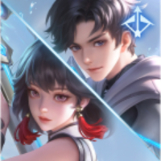

상대 영웅 상세 대응
元流之子(射手)
한 줄: 사거리 밖에서, 이동기 후에.
상대 특성
원거리 지속 사수 계열. 원거리 지속 딜과 이동, 궁극기로 안전하게 압박한다.
라인전 대응
사수 형태의 사거리 밖에서 미니언을 먹고, 이동기가 빠진 뒤 2스킬로 접근한다.
교전·한타
아군 딜러와 함께 사수 형태를 측면에서 압박하고, 붙은 뒤 점사한다.
하지 말 것
사수 형태의 사거리 안에서 오래 서 있는 것.
상세 스킬
4개중국판 공식 스킬 설명을 한국어로 번역했습니다. 스킬명·쿨다운·수치는 패치에 따라 달라질 수 있으므로 게임 내 최신 설명을 우선하세요. 영웅 이름은 중국판 표기를 유지합니다.
-
패시브
모든 것은 흐른다
元流之子는 몸에 "흐름"을 도입하여 샘물에 몸을 담그고 10%~20%의 공격 속도(영웅 레벨에 따라 증가)를 얻고 다음 네 가지 특성 중 하나를 강화할 수 있습니다. 활력: 최대 체력을 추가로 얻습니다. 관통: 물리 공격을 추가로 얻습니다. 신속성: 이동 속도를 추가로 얻습니다. 집중력: 쿨다운 감소를 추가로 얻습니다. 강화된 기본 공격: 관통하는 석궁을 발사하여 경로에 있는 적에게 추가 물리 피해를 입힙니다. 적을 타격하면 비행 거리가 늘어나지만 피해량이 30% 감소합니다. 강화된 기본 공격을 사용하려면 '흐름' 레이어를 1개 소모할 수 있습니다.
-
1스킬
하나로 융합
元流之子은 '흐름'을 모아 제어 효과 없이 주변 적에게 물리 피해와 넉백을 가하고, 가마솥 속의 화살과 만전제발의 쿨다운을 1/2의 쿨다운을 줄이면서 회복 및 5중 '흐름'을 얻습니다. 주변 아군 영웅과 미니언은 추가 회복(최대 100%)과 '흐름'(최대 9레이어)을 제공합니다.
-
2스킬
가마솥 속의 화살
元流之子은 지정된 대상(적 영웅이 막을 수 있음)에 거대한 석궁 화살을 발사하여 480/576/672/768/864/960(+120% 추가 물리 공격력)의 물리 피해를 입히고 영웅이 아닌 유닛을 밀어냅니다. 해제 후 일정 거리만큼 이동할 수 있습니다. (2초 이내에 다시 해제하면 강화됩니다.) 두 번째 사용: 석궁 피해를 25% 강화합니다. 세 번째 사용: 석궁 피해를 50% 강화하면서 띄웁니다. 추가 가마솥 속의 화살을 사용하려면 "흐름"의 4개 레이어를 소비할 수 있습니다. 공격 속도에 따라 해제 속도가 증가합니다.
-
3스킬
만전제발
元流之子은 지정된 지역을 향해 가벼운 석궁 화살 7발을 발사합니다(석궁 화살 1발만큼 공격 속도 25% 증가, 최대 7발). 지정된 범위(잠긴 범위 내의 대상)에 50/75/100(+24% 물리 공격)의 물리 피해를 줍니다(치명타 발동, 석궁 화살 3발마다 일반 공격으로 간주). 이동 속도가 20/30/40 증가합니다. (부동을 얻으려면 다시 사용) 추가 만전제발를 사용하여 5개 레이어의 "스트림"을 소비할 수 있습니다.
탱커 기본: 스킬·유세·콤보·빌드·라인전 원칙은 元流之子 탱커 기본 운영에서 먼저 확인할 수 있습니다. 이 페이지는 元流之子(射手) 상대에 맞춘 대응입니다.